想学习DDS(Data Distribution Service)，但是又没有配套的商用软/硬件，莫慌。虚拟机里跑开源DDS，一样可以玩DDS，本文给大家分享一下自己学习DDS过程中的一些总结。
开始学习之前，先了解一下用到软/硬件环境，如下所示：
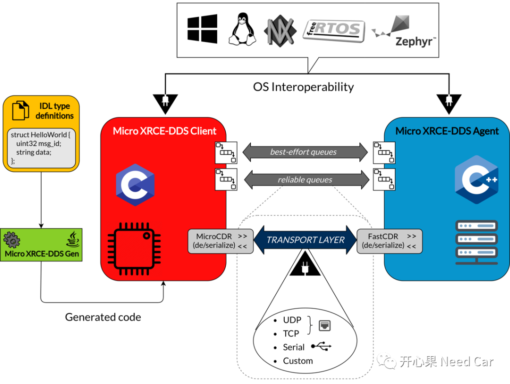
Micro XRCE-DDS Gen工具，将*.idl文件配置信息生成对应目标代码； 传输层可以使用TCP、UDP、Serial、Custom中的一种； 在Client侧，使用MicroCDR库对数据进行序列化/反序列化操作；而在Agent侧，需要用FastCDR对数据进行序列化/反序列化操作。
本文安装环境：虚拟机：VBox ，Ubuntu版本：20.4
运行Agnet之前，需要先安装Agent，并且编译对应的Code，具体指令如下所示：
git clone https://github.com/eProsima/Micro-XRCE-DDS-Agent.gitcd Micro-XRCE-DDS-Agentmkdir build && cd buildcmake ..makesudo make install
此示例中，Client-Agent通过 UDP 通信，使用端口 2019。
cd /usr/local/bin && MicroXRCEAgent udp4 -p 2019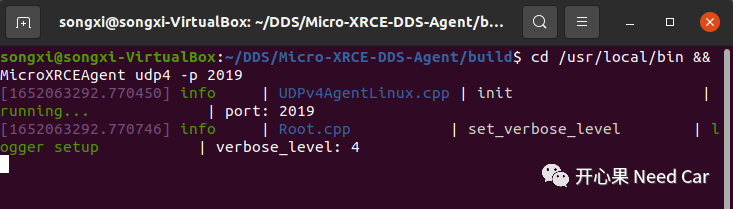
注意：需要先运行Agent进程，在运行Publisher/Subscriber进程，否则Session无法创建。
clone代码时遇到的问题
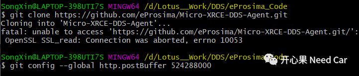
git config --global http.postBuffer 524288000参考链接：
https://blog.csdn.net/bigcat030/article/details/115742972
Publisher、Subscriber是两个不同的进程，本文创建的Publisher、Subscriber在Client侧。Client关联的工具和交互信息如下所示：
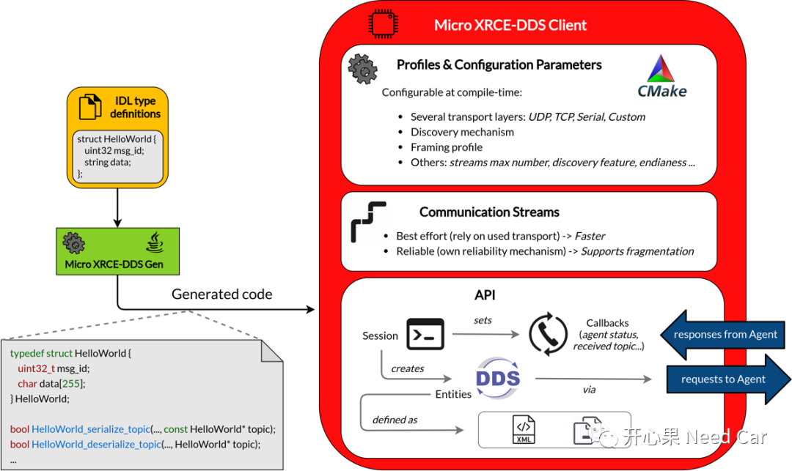
同Agent一样，运行Client之前需要先下载对应的源码，并且进行编译，命令如下所示：
git clone https://github.com/eProsima/Micro-XRCE-DDS-Client.gitcd Micro-XRCE-DDS-Clientmkdir build && cd buildcmake .. -DUCLIENT_BUILD_EXAMPLES=ONmake
运行Publisher
examples/PublishHelloWorld/PublishHelloWorldClient 127.0.0.1 2019PublishHelloWorldClient进行运行如下所示：
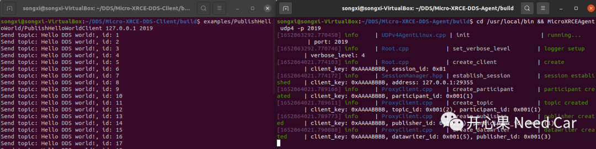
命令"examples/PublishHelloWorld/PublishHelloWorldClient 127.0.0.1 2019"相当于给PublishHelloWorldClient进程（main函数）依次传递三个参数，如下所示：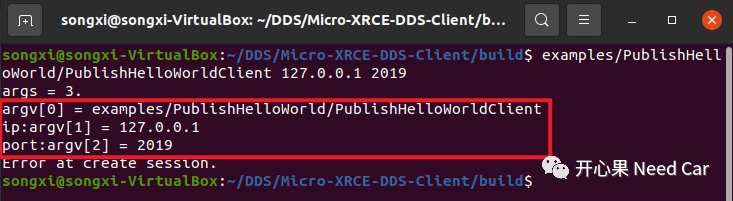
运行Subscriber
examples/SubscriberHelloWorld/SubscribeHelloWorldClient 127.0.0.1 2019SubscribeHelloWorldClient例程运行如下所示：
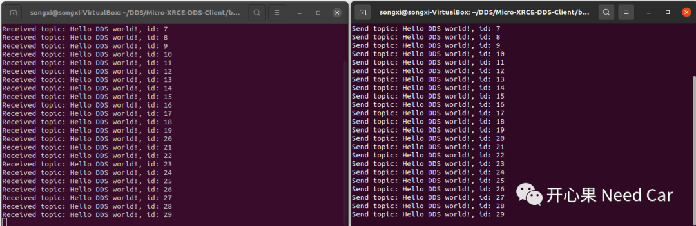
Demo中的坑点
SubscribeHelloWorldClient例程运行提示如下问题：
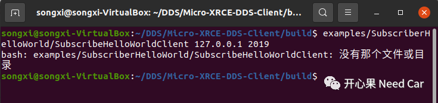
下载的examples中存在文件夹命名错误，根据提示重新命名（SubscribeHelloWorld->SubscriberHelloWorld）。
$ sudo apt install git openjdk-8-jdk gradle$ git clone https://github.com/eProsima/Micro-XRCE-DDS-Gen.git$ cd Micro-XRCE-DDS-Gen$ git submodule init$ git submodule update$ gradle build -Dbranch=v1.2.5
./scripts/microxrceddsgen -help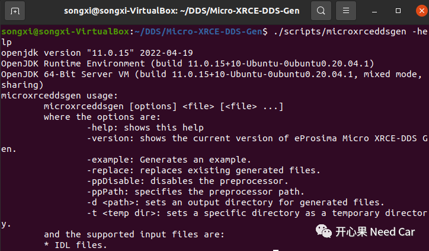
使用Micro XRCE-DDS-Gen tool生成源文件
./microxrceddsgen HelloWorld.idl运行如下所示：
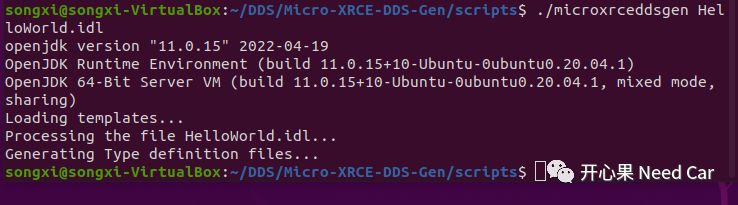
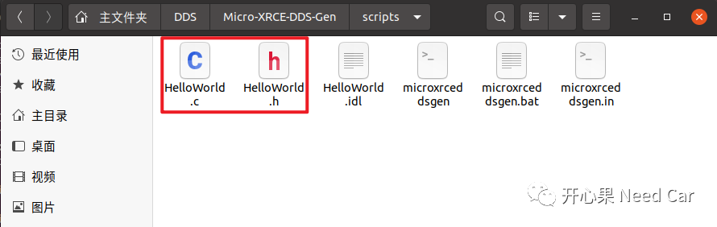
提示：上图包含microxrceddsgen的运行脚本（*.sh/*.bat/*.in），HelloWorld的*.idl文件。
Micro XRCE-DDS-Gen tool使用中遇到的Error
Error01：Micro XRCE-DDS-Gen tool已安装，却找不到命令“microxrceddsgen”命令，提示如下Error:
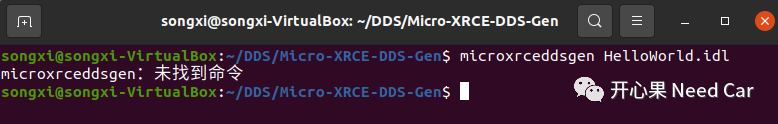
Error01解决策略：
sudo ln -s /home/songxi/DDS/Micro-XRCE-DDS-Gen/scripts/microxrceddsgen /usr/bin/microxrceddsge参考链接：https://blog.csdn.net/clisten_/article/details/119573171
Ubuntu使用中遇到的其他问题
Error01：Virtualbox中Ubuntu安装增强功能报错：未能加载虚拟光驱 VBoxsGuestAdditions.iso到虚拟电脑
https://blog.csdn.net/zhangmeimei_pku/article/details/79597620

参考资料
SIMPLE TITLE
https://micro-xrce-dds.docs.eprosima.com/en/latest/introduction.html
往期精彩回顾